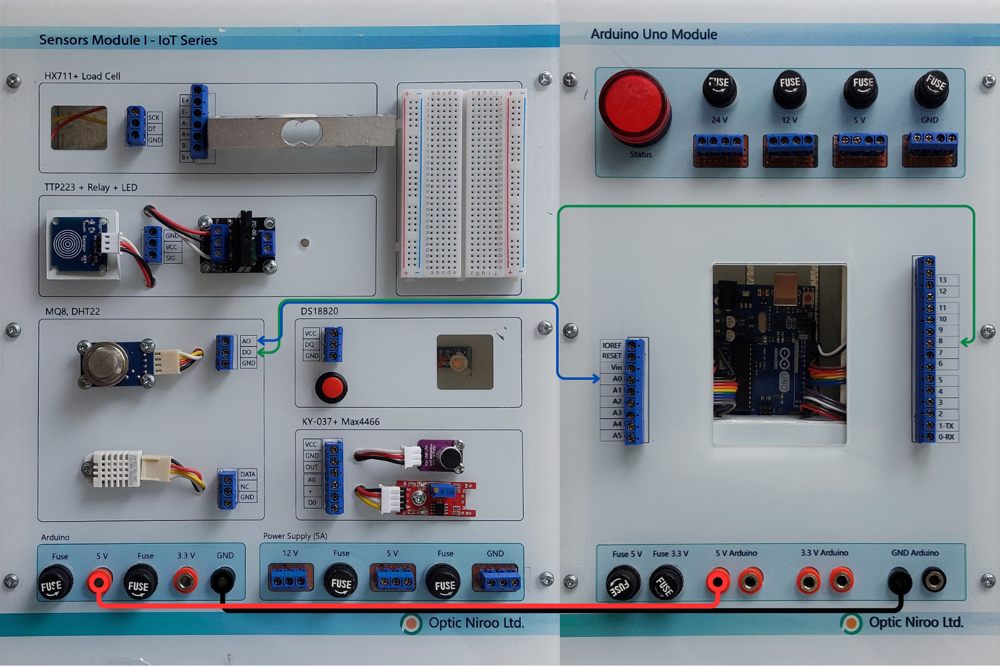

سنسورهای گاز سری MQ از هیتر داخلی کوچک به همراه سنسور الکتروشیمیایی بهره می گیرند. این سنسورها نسبت به طیف گسترده ای از گازها حساس اند. سنسور گاز هیدروژن MQ-8 مناسب برای سنجش غلظت هیدروژن موجود در هوا می باشد. این سنسور توانایی اندازه گیری غلظت گاز هیدروژن را از 100ppm تا 1000ppm را دارد. حساسیت بالا نسبت به هیدروژن و حساسیت کم نسبت به الکل و پاسخ گویی سریع از خصوصیات این سنسور است.
کاربردها :
تشخیص نشتی گاز هیدروژن: در صنایع و آزمایشگاهها برای جلوگیری از حوادث ناشی از نشتی گاز هیدروژن استفاده میشود.
سیستمهای ایمنی: در سیستمهای هشدار دهنده گاز برای اطلاعرسانی به کاربران در صورت وجود نشتی گاز.
خودروهای هیدروژنی: در خودروهای سوخت سلولی برای مانیتورینگ و کنترل میزان گاز هیدروژن.
سنسور MQ-8 دارای چهار پین است که به صورت زیر عمل میکنند:
- VCC: تغذیه سنسور
- GND: زمین
- DO (Digital Output): خروجی دیجیتال
- AO (Analog Output): خروجی آنالوگ
اتصالات
برای اتصال سنسور MQ-8 به آردوینو، میتوانید از پینهای زیر استفاده کنید:
| پین سنسور | اتصال به آردوینو |
|---|---|
| VCC | 5V |
| GND | GND |
| AO | A0 |
| DO | D2 |
راه اندازی ماژول سنسور هیدروژن MQ-8 با آردوینو
گام اول: سیم بندیمطابق مدار زیر، ماژول را به آردوینو وصل کنید. 